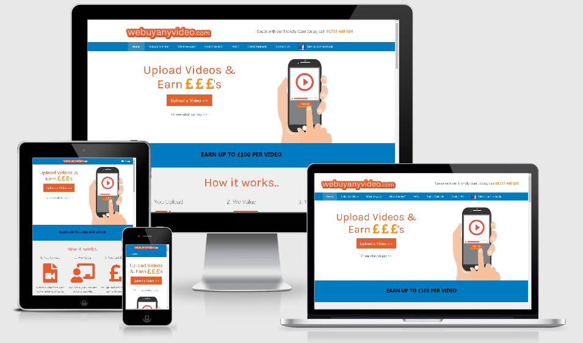
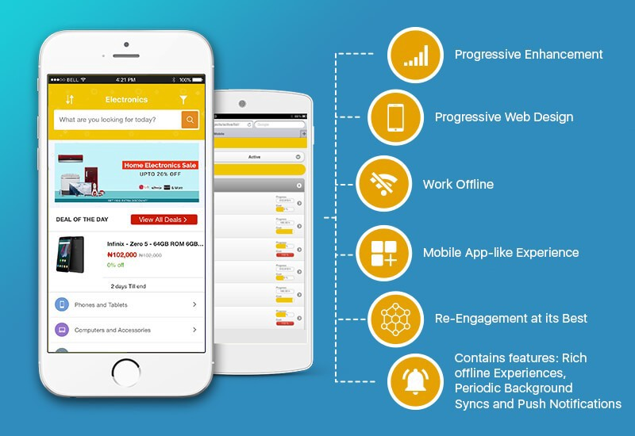
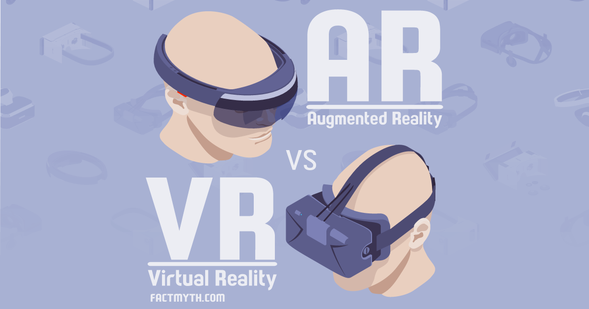

Website ini dibuat untuk kerpeluan magang PKL CV Pandonga Creative

|
Halo Perkenalkan Nama saya Muhamad Rizky Fajar Febrian, saya adalah seorang web developer yang berfokus pada backend developer. Saya telah mengerjakan puluhan job yang berkaitan dengan web devloper dari berbagai tempat dan instansi dengan pengalaman lebih dari lima tahun. |
Sekilas Tentang Keahlian Saya
Saya adalah seorang software engineer yaitu lebih tepatnya adalah web developer yang berfokus pada backend system yang telah bergabung dengan pandonga Creative pada tahun 2021 sampai sekarang ini. Saya sangat senang bekerja pada bidang teknologi karena tidak pernah kudet atau kurang update.
|
Professional Profile
Github : http://github.com/mrizkyff
Social Profile
Instagram : http://nstagram.com/mrizkyff
|
|  |
Aplikasi Karyawan Pandonga Creative
Aplikasi ini dibuat untuk mengelola seluruh kegiatan yang berkaitan dengan pekerjaan karyawan pada CV Pandonga Creative, dibuat pada tahun 2020 dan selesai pada tahun 2021. Aplikasi ini sangat membantu seluruh pekerjaan karyawan.
Dibuat dengan menggunakan teknologi:
|
Mobile App Penjualan Kota Semarang
Aplikasi ini digunakan untuk menampung kegiatan jual beli barang baru maupun bekas yang ada pada lingkup kota semarang, dengan konsep marketplace akan memudahkan pengguna untuk bertransaksi satu sama lain. Aplikasi ini dibuat pada tahun 2019 sampai 2020.
Dibuat dengan menggunakan teknologi:
|
 |
|  |
Augmented Reality dan Virtual Reality
Aplikasi ini dibuat untuk konsumen yang menginginkan imaginasi mendekati kenyataan dengan seluruh fitur yang terdapat pada device AR maupun VR yang membantu melakukan visualisasi kepada user atau konsumen.
Dibuat dengan menggunakan teknologi:
|